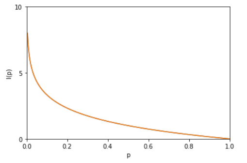

1948年，克劳德·爱尔伍德·香农将热力学中的熵引入信息论，所以也被称为香农熵 (Shannon entropy)，信息熵 (information entropy)。
我们有时需要定量的来度量信息量的大小，因此提出了信息熵，用来度量包含的信息量的多少。
自信息熵（information entropy）
考虑一个随机变量x，它的分布概率为p(x)。我们令$$I(x)=-log(p(x))$$ 叫做随机变量x的自信息量（self-information）。图像如下：

自信息熵描述的是随机变量某个事件发生所带来的信息量，举个例子，假如对x进行分类，x属于 $X_0$ 或者 $X_1$ 两个类别的概率如下：
| x | $X_0$ | $X_1$ |
|---|---|---|
| p(x) | 0.5 | 0.5 |
也就是x属于两个类别的概率相等，都是0.5。那么变量x属于$X_0$和属于$X_1$的自信息量分别为：
$$I(X_0)=-log(0.5)=1$$
$$I(X_1)=-log(0.5)=1$$
也就是说，变量x属于两个类别所带来的信息量都是1。
如果x属于$X_0$的概率大于属于$X_1$的概率：
| x | $X_0$ | $X_1$ |
|---|---|---|
| p(x) | 0.9 | 0.1 |
则自信息量为：
$$I(X_0)=-log(0.9)=0.152003$$
$$I(X_1)=-log(0.1)=3.321928$$
也就是说，x属于$X_0$带来的信息量小于x属于$X_1$带来的信息量。
我们从直观上来理解一下，因为x属于$X_0$的概率非常大（0.9），所以说x属于$X_0$可以说是比较意料之中的事，因为我们随便猜也会猜属于$X_0$，所以说x属于$X_0$带来的信息量比较小。
相反，x属于$X_1$的概率非常小(0.1)，当概率P越小，x出现的概率就越小，一旦出现所获得的信息量就越大。所以从自信息的图上来看，p(x)越小，自信息量越大。
通常称I(x)为消息x的自信息，它具有随机变量的性质，但自信息量不能表示信源总体的不确定度。
信息熵
如果x所有可能的取值（对分类问题就是所有可能的类别）为X={$X_1$, $X_2$, … , $X_n$}，其概率分布为$P(X=x_i)=P_i(i=1,2,…,n)$，则随机变量x的信息熵定义为：
$$
H(X)=-\sum_{x} p(x) \log p(x)=-\sum_{i=1}^{n} p\left(x_{i}\right) \log p\left(x_{i}\right)
$$
根据公式，信息熵可以理解为自信息量的数学期望。自信息量表示某个事件的信息量，通过乘以该事件发生的概率并和，也就是所有可能发生事件的信息量的期望。
信息熵的物理意义可以代表一个事件的不确定性。例如，一个确定事件的信息熵应该最小（平均信息量最小），不确定事件的信息熵应该最大（平均信息量最大）。熵越大，就越无序，越混乱，越不确定。
例1，确定事件
例如，随机变量x概率分布如下：
| x | $X_0$ | $X_1$ |
|---|---|---|
| p(x) | 1 | 0 |
首先算自信息量为：
$I(X_0)=-\log(1)=0$
$I(X_1)=-\log(0)=Infiniti$
信息熵为：
$$
\begin{aligned}
H(X)&=-\sum_{x} p(x) \log p(x) \\
&=p(X_0) \times I(X_0)+p(X_1) \times I(X_1) \\
&=p(X_0) \times \log(p(X_0)) + p(X_1) \times \log(p(X_1)) \\
&=1 \times 0+0 \times Infiniti=0
\end{aligned}
$$
上面的例子实际是一个确定事件，x必定属于$X_0$，因此对于确定事件的信息熵最小，也表示该事件的不确定性最小。
例2，等概率事件
如果x的概率分布不是确定事件，而是服从如下的概率分布：
| x | $X_0$ | $X_1$ |
|---|---|---|
| p(x) | 0.5 | 0.5 |
则信息熵计算为：
$$H(X)=-\sum_{x} p(x) \log p(x) \\
=p(X_0) \times I(X_0)+p(X_1) \times I(X_1) \\
=p(X_0) \times \log(p(X_0)) + p(X_1) \times \log(p(X_1)) \\
=0.5 \times 1+0.5 \times 1=1$$
由于x属于两个类别的概率相等，都是0.5，因此x是一个高度随机事件，具有高度的不确定性，信息熵为1。
例3，随机事件
如果x概率分布如下：
| x | $X_0$ | $X_1$ |
|---|---|---|
| p(x) | 0.9 | 0.1 |
则信息熵计算为：
$$H(X)=-\sum_{x} p(x) \log p(x) \\
=p(X_0) \times I(X_0)+p(X_1) \times I(X_1) \\
=p(X_0) \times \log(p(X_0)) + p(X_1) \times \log(p(X_1)) \\
=0.9 \times 0.15200+0.1 \times 3.321928=0.4689928$$
该x是随机事件，但是随机性较小，所以信息熵较小。
可以得出结论，当x的所有类别的概率相等时，x的不确定性最大，信息熵最大。当x为确定事件时，x的不确定性最小，信息熵最小（=0）。
另一种理解方式
假设我们要对信息进行传递，需要对信息进行编码，信息熵表示的就是我们对这些信息进行最优编码所需要的bit数。
在香农信息论中，用基于P的编码方法去编码来自P的样本，其最优编码平均所需要的比特个数（即这个字符集的熵）为：
P(x)表示x在信源中出现的频率，例如在文本中则可以表示字符x在整个语料库中出现的频率。$\log (\frac{1}{P(x)})$表示在该信源中编码x所需要的长度。在最优编码中，为了使所有信息的平均编码长度最小，通常会为出现频率较大的字符赋予较短的编码长度（回想Huffman编码）。所以上面的式子表示的就是一个数据集中最优编码平均所需要的比特个数（即这个字符集的熵），如果是计算机中2进制编码，则式子中的log以2为底，以此类推。
例子1中，确定事件，所以不需要编码，需要0bit。
例子2中，等概率事件，使用1bit就可以编码。
例子3中，随机事件，通过计算可以得知，大概需要0.469bit对信息进行编码。
所以，信息熵可以理解为对事件进行编码所需要的最小位数。可以反映事件的信息量。
条件熵 (Conditional entropy)
条件熵的原始形式：
$$
\begin{aligned} H(Y | X) &=\sum_{x} p(x) H(Y | X=x) \\
&=-\sum_{x} p(x) \sum_{y} p(y | x) \log p(y | x) \\
&=-\sum_{x} \sum_{y} p(x, y) \log p(y | x) \\
&=-\sum_{x, y} p(x, y) \log p(y | x) \end{aligned}
$$
条件熵表示在已知随机变量 X 的条件下，Y 的条件概率分布的熵对随机变量 X 的数学期望。
条件熵 H(Y|X) 表示在已知随机变量 X 的条件下随机变量 Y 的不确定性。
通常条件熵H(Y|X)要比Y的信息熵H(Y)小，因为条件熵H(Y|X)相当于是在知道了X的信息之后Y的不确定性。而增加了X的信息通常会减少Y的不确定性。加入了额外信息而导致总的不确定性减小，这就引出了信息增益的概念。
下面例子中具体体会。
另外，条件熵 H(Y|X) 相当于联合熵 H(X,Y) 减去单独的熵 H(X)，即
$$
H(Y | X)=H(X, Y)-H(X)
$$
证明如下：
$$
\begin{aligned} H(X, Y) &=-\sum_{x, y} p(x, y) \log p(x, y) \\
&=-\sum_{x, y} p(x, y) \log (p(y | x) p(x)) \\
&=-\sum_{x, y} p(x, y) \log p(y | x)-\sum_{x, y} p(x, y) \log p(x) \\
&=H(Y | X)-\sum_{x, y} p(x, y) \log p(x) \\
&=H(Y | X)-\sum_{x}^{x} \log p(x) \sum_{y} p(x, y) \\
&=H(Y | X)-\sum_{x}^{x}(\log p(x)) p(x) \\
&=H(Y | X)-\sum_{x}^{x} p(x) \log p(x) \\
&=H(Y | X)+H(X) \end{aligned}
$$
直观上理解，
H(Y, X) = H(X)+H(Y|X)
XY总体的信息量 = X的信息量 + 已知X的信息下Y的信息量
或
H(X, Y)-H(X) = H(Y|X)
XY总体的不确定性，由于提供了X的额外信息，减去了X的不确定性，剩下的是已知X情况下的Y的不确定性。
条件熵例子
| Person | 头发长度 | 体重 | 年龄 | 性别 |
|---|---|---|---|---|
| no1 | 0 | 250 | 36 | 男 |
| no2 | 10 | 150 | 34 | 女 |
| no3 | 2 | 90 | 10 | 男 |
| no4 | 6 | 78 | 8 | 女 |
| no5 | 4 | 20 | 1 | 女 |
| no6 | 1 | 170 | 70 | 男 |
| no7 | 8 | 160 | 41 | 女 |
| no8 | 10 | 180 | 38 | 男 |
| no9 | 6 | 200 | 45 | 男 |
我们令X表示性别，Y表示头发长度，规定长度>5为长发，长度<5为短发，也就是Y表示头发长度是否大于5。
下面计算X与Y的联合熵、X的信息熵、Y的信息熵、Y作为条件下X的条件熵、X作为条件下Y的条件熵
H(X, Y) = H(男,短发)3 + H(男,长发)2 + H(女,短发)1 + H(女,长发)3
$$
H(X, Y) = 3/9 \times \log(3/9) + 2/9 \times \log(2/9) + 1/9 \times \log(1/9) + 3/9 \times \log(3/9)=1.8910611120726526\\
$$
H(Y) = H(短发)4 + H(长发)5
$$
H(Y) = 4/9 \times \log(4/9) + 5/9 \times \log(5/9)=0.9910760598382222\\
$$
H(X) = H(男)4 + H(女)5
$$
H(X) = 4/9 \times \log(4/9) + 5/9 \times \log(5/9)=0.9910760598382222\\
$$
H(Y|X) = p(男) * (H(短发|男) + H(长发|男)) + p(女) * (H(短发|女) + H(长发|女))
$$
H(Y|X) = 5/9 \times (3/5 \times \log(3/5) + 2/5 \times \log(2/5)) + 4/9 \times (1/4 \times \log(1/4) + 3/4 \times \log(3/4))=0.8999850522344305\\
$$
H(X|Y) = p(短发) * (H(男|短发) + H(女|短发)) + p(长发) * (H(男|长发) + H(女|长发))
$$
H(X|Y) = 4/9 \times (3/4 \times log(3/4) + 1/4 \times \log(1/4)) + 5/9 \times (2/5 \times \log(2/5) + 3/5 \times \log(3/5))=0.8999850522344305\\
$$
可以验证$H(Y | X)=H(X, Y)-H(X)$成立。
相对熵(relative entropy)
上面我们说，用基于P的编码方法去编码来自P的样本，其最优编码平均所需要的比特个数为：
用基于P的编码方法去编码来自Q的样本，则所需要的比特个数变为：
于是，我们即可得出P与Q的KL散度：
$$
\begin{array}{c}{\mathrm{D}(\mathrm{P} || \mathrm{Q})=H^{\prime}(x)-H(x)=\sum_{x \in X} P(x) * \log \left(\frac{1}{Q(x)}\right)-\sum_{x \in X} P(x) * \log \left(\frac{1}{P(x)}\right)} \\ {=\sum_{x \in X} P(x) *\left[\log \left(\frac{P(x)}{Q(x)}\right)\right]}\end{array}
$$
如果P和Q中数据分布是一模一样的，那么H(x) = H’(x)，所以 KL(P||Q)=0。如果P和Q分布差距越大，$D_{KL}(P||Q)$越大。因此，两个分布的相对熵又叫KL散度，常用来衡量两个分布的相似程度。
相对熵（KL散度）具有如下性质：
- 如果P和Q两个分布相同，则$D_{KL}(P||Q)=0$。
- 相对熵不具有对称性：$D_{KL}(P||Q) \neq D_{KL}(Q||P)$
- 相对熵恒大于等于0：$D_{KL}(P||Q) \geq 0$。证明如下（利用Jensen不等式）：
$$
\begin{aligned} D_{K L}(p || q) &=\sum_{x} p(x) \log \frac{p(x)}{q(x)} \\ &=-\sum_{x} p(x) \log \frac{q(x)}{p(x)} \\ &=-E_{p(x)}\left(\log \frac{q(x)}{p(x)}\right) \\ & \geq-\log E_{p(x)}\left(\frac{q(x)}{p(x)}\right) \\ &=-\log \sum_{x} p(x) \frac{q(x)}{p(x)} \\ &=-\log \sum_{x} q(x) \end{aligned}
$$
因为$\sum_{x} p(x) = 1$，所以$D_{KL}(P||Q) \geq 0$
总结：相对熵可以用来衡量两个概率分布之间的差异，上面公式的意义就是求 p 与 q 之间的对数差在 p 上的期望值。
相对熵例子
假如一个数据集中存在0和1两种字符，0和1的真实概率分布为A，但是我们不知道A的具体分布。现在我们想要用另外的分布去拟合分布A。
假设A的真实分布为：p(0)=0.5, p(1)=0.5。（但是我们并不知道这个真实分布）
我们通过对样本进行观察统计，得到两个分布：
分布B：p(0)=0.1, p(1)=0.9
分布C：p(0)=0.4, p(1)=0.6
则分布A和分布B之间的相对熵（KL散度）为：
$$
D_{KL}(A||B) = 0.5 \times \log (\frac{0.5}{0.1}) + 0.5 \times \log (\frac{0.5}{0.9}) = 0.7369655941662061
$$
A与C之间的相对熵（KL散度）为：
$$
D_{KL}(A||C) = 0.5 \times \log (\frac{0.5}{0.4}) + 0.5 \times \log (\frac{0.5}{0.6}) = 0.029446844526784283
$$
可以看出C分布更接近A分布，所以A与C之间的相对熵更小。
交叉熵(cross entropy)
终于到了大名鼎鼎的交叉熵了。交叉熵的名字几乎是人人皆知，机器学习中也经常使用。但是这个交叉熵到底是怎么个原理呢。
我们将上面的KL散度的公式稍微变形一下：
$$
\begin{aligned} D_{K L}(p || q) &=\sum_{i=1}^{n} p\left(x_{i}\right) \log \left(p\left(x_{i}\right)\right)-\sum_{i=1}^{n} p\left(x_{i}\right) \log \left(q\left(x_{i}\right)\right)
\\ &=-H(p(x))+\left[-\sum_{i=1}^{n} p\left(x_{i}\right) \log \left(q\left(x_{i}\right)\right)\right] \end{aligned}
$$
等式的前一部分正好就是p的信息熵，后面那一部分，就是交叉熵：
$$
H(p, q)=-\sum_{i=1}^{n} p(x_i)\log (q(x_i))
$$
在机器学习中，我们需要评估label和predicts之间的差距，并且我们希望我们预测的prediction的分布与真实的label的分布能够尽量一致，正好可以使用KL散度，即$D_{KL} (y|| \hat{y})$。由于KL散度的前一项$-H(y)$不变（因为训练数据是固定的，所以y的分布是固定的），所以在优化过程中，只需要最优化交叉熵就可以了。所以一般在机器学习中直接用用交叉熵做loss，评估模型。